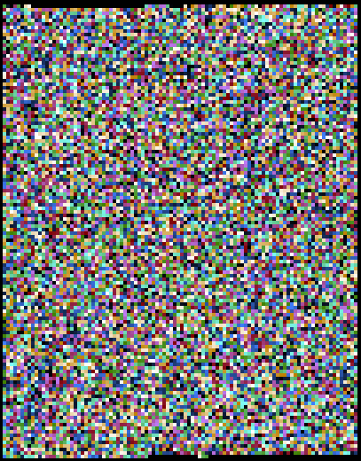

KDOC 213: PNG画像のバイナリを眺める
この文書のステータス
- 作成
- 2024-08-10 貴島
- レビュー
- 2024-08-11 貴島
概要
PNG画像のバイナリを眺める。
データ

Figure 1: PNGファイルバイナリの可視化
Figure 2: 画像として見る
xxd ./buseum/202501010001_1/cat.png | head -n 30
00000000: 8950 4e47 0d0a 1a0a 0000 000d 4948 4452 .PNG........IHDR 00000010: 0000 0280 0000 01aa 0806 0000 009b 12f5 ................ 00000020: ee00 0000 0173 5247 4200 aece 1ce9 0001 .....sRGB....... 00000030: c03f 4944 4154 78da ecc1 8100 0000 0080 .?IDATx......... 00000040: a0fd a917 a902 0000 0000 0000 0000 0000 ................ 00000050: 0000 0000 0000 0000 0000 0000 0000 0000 ................ 00000060: 0000 0000 0000 0000 0000 0000 0000 0000 ................ 00000070: 0000 0000 0000 0000 0000 0000 0000 0000 ................ 00000080: 0000 0000 0000 0000 0000 0000 0000 0000 ................ 00000090: 0000 0000 0000 0000 0000 0000 0000 0000 ................ 000000a0: 0000 0000 0000 0000 0000 0000 0000 0000 ................ 000000b0: 0000 0000 0000 0000 0000 0000 0000 0000 ................ 000000c0: 0000 0000 0000 0000 0000 0000 0000 0000 ................ 000000d0: 0000 0000 0000 0000 0000 0000 0000 0000 ................ 000000e0: 0000 0000 0000 0000 0000 0000 0000 0000 ................ 000000f0: 0000 0000 0000 0000 0000 0000 0000 0000 ................ 00000100: 0000 0000 0000 0000 0000 0000 0000 0000 ................ 00000110: 0000 0000 0000 0000 0000 0000 0000 0000 ................ 00000120: 0000 0000 0000 0000 0000 0000 0000 0000 ................ 00000130: 0000 0000 0000 0000 0000 0000 0000 0000 ................ 00000140: 0000 0000 0000 0000 0000 0000 0000 0000 ................ 00000150: 0000 0000 0000 0000 0000 0000 0000 0000 ................ 00000160: 0000 0000 0000 0000 66df 6e72 9388 c338 ........f.nr...8 00000170: 8eff 60b8 435d 991a 5e0b 03e3 3853 a638 ..`.C]..^...8S.8 00000180: 3804 63ad 0e52 742a 22b5 6a93 2e48 b5c5 8.c..Rt*".j..H.. 00000190: 9713 b876 e111 dcb8 73e3 3dbc 8257 7063 ...v....s.=..Wpc 000001a0: 6262 22d3 f9bb b057 e802 fafd 24cf 25be bb"....W....$.%. 000001b0: bf3c 0000 0000 0000 0000 0000 0000 0000 .<.............. 000001c0: 0000 0000 0000 0000 0000 b870 5ff2 a364 ...........p_..d 000001d0: 5838 912c 4979 0100 0060 a559 0200 00c0 X8.,Iy...`.Y....
xxd ./buseum/202501010001_1/cat.png | tail -n 30
0001beb0: 9d79 5a7a 7979 a181 a814 76a9 e870 779c .yZzyy....v..pw.
0001bec0: 609d fa08 f269 748b 734b 5b4b 4310 d4f2 `....it.sK[KC...
0001bed0: 6b6d 712a 22eb f57a 181f 787f bf23 831b kmq*"..z..x..#..
0001bee0: 4bf5 faf7 8599 4a5a aecf a6c5 b9e9 b4b5 K.....JZ........
0001bef0: be92 b69b cdb4 bdb9 915e 3c7b 9a9a eb2b .........^<{...+
0001bf00: 6977 7727 bd5c 5b4d 3bcd 57e9 f0cd dbd4 iww'.\[M;.W.....
0001bf10: 6aef a5cd e6eb af4f 1ed5 2722 2286 8737 j......O..'""..7
0001bf20: cfc5 4f3e 9c9c 9423 25e1 2100 c05f a4b4 ..O>...#%.!.._..
0001bf30: b7bf 9f45 444c 0edd b936 353e 717b 667c ...EDL...65>q{f|
0001bf40: 64ab 3639 fa69 b15a f9bc 507b fce5 7963 d.69.i.Z..P{..yc
0001bf50: 3ecd 4f57 be4d 3fb8 f7b1 363f f5ae 562d >.OW.M?...6?..V-
0001bf60: decf 4ede 3d5e 5d5e 3a6e 341a d581 8181 ..N.=^]^:n4.....
0001bf70: eb11 11ed 762b 8b88 288a fbe5 5eaf 67f1 ....v+..(...^.g.
0001bf80: 0300 384b 0687 6e5e 987a 58bd b834 575c ..8K..n^.zX..4W\
0001bf90: 5a9b 296e 8cde 1abc 7af9 4a7e 3e4e d16e Z.)n....z.J~>N.n
0001bfa0: b733 67c6 0000 fea0 eed1 5116 bfa8 d7eb .3g.......Q.....
0001bfb0: 6545 5194 2b95 4a39 4e71 7070 9845 4474 eEQ.+.J9Nqpp.EDt
0001bfc0: bbdd 2ca5 94f5 fbfd 72a7 d3b1 f6c1 1951 ..,.....r......Q
0001bfd0: 9261 01fc 537e 6b61 5b8a 28a5 94a2 d56a .a..S~ka[.(....j
0001bfe0: 95f2 3c8f 3ccf 636c 6ccc ff6a 0000 0000 ..<.<.cll..j....
0001bff0: 0000 0000 0000 0000 0000 0000 0000 0000 ................
0001c000: 0000 0000 0000 0000 0000 0000 0000 0000 ................
0001c010: 0000 0000 0000 0000 0000 0000 0000 0000 ................
0001c020: 0000 0000 0000 0000 0000 0000 0000 0000 ................
0001c030: 0000 0000 0000 0000 0000 0000 0000 0000 ................
0001c040: 0000 0000 0000 0000 0000 0000 0000 0000 ................
0001c050: 0000 0000 0000 0000 0000 0000 0000 0000 ................
0001c060: 0000 0000 0000 0000 0000 0000 00f8 8ffc ................
0001c070: 00d7 ebdf b42d 5425 0000 0000 0049 454e .....-T%.....IEN
0001c080: 44ae 4260 82 D.B`.
file ./buseum/202501010001_1/cat.png
./buseum/202501010001_1/cat.png: PNG image data, 640 x 426, 8-bit/color RGBA, non-interlaced
du -sh ./buseum/202501010001_1/cat.png
116K ./buseum/202501010001_1/cat.png
stat ./buseum/202501010001_1/cat.png
File: ./buseum/202501010001_1/cat.png Size: 114821 Blocks: 248 IO Block: 4096 regular file Device: 37h/55d Inode: 16522419 Links: 1 Access: (0664/-rw-rw-r--) Uid: ( 1000/ orange) Gid: ( 1000/ orange) Access: 2024-08-08 00:21:39.354927271 +0900 Modify: 2024-08-07 23:35:02.290185261 +0900 Change: 2024-08-07 23:35:02.290185261 +0900 Birth: -
メモ
情報を入れずに、眺めた。
- ヘッダーは半分くらいが値が0になっている。使っていないのだろうか
- ヘッダー以外はランダムに見える。圧縮されているためか
- ただ、完全にランダムというよりは分布にやや偏りがあるように見える。ある程度固まりになって線上になっている箇所が多く見える。が気のせいにも思える
- 元画像的には、色には明らかにまとまりがある。黒の近くには黒がきやすく、白の近くには白がきやすい。それは影響するのだろうか
- 完全なノイズ画像のバイナリと比較してみるのがよさそう。あるいは単色の画像のバイナリを見るとどうなるか
- 色の情報がほとんどを占めているように見える
- 末尾付近にもヘッダーのように値として使っていそうな領域があり、多くが未使用に見える
- 元画像のように、バイナリから白系と黒系が多いことを読み取れるだろうか。それとも圧縮で変わってしまうのか
- フッターの一番下には、
IENDという文字が見える
関連
なし。